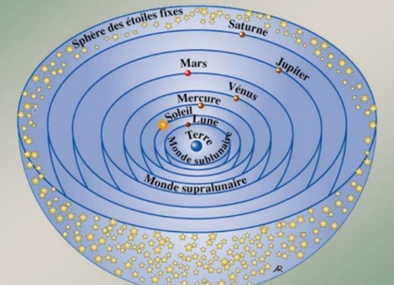
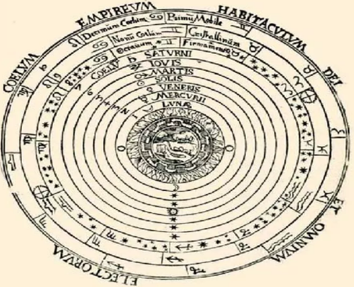
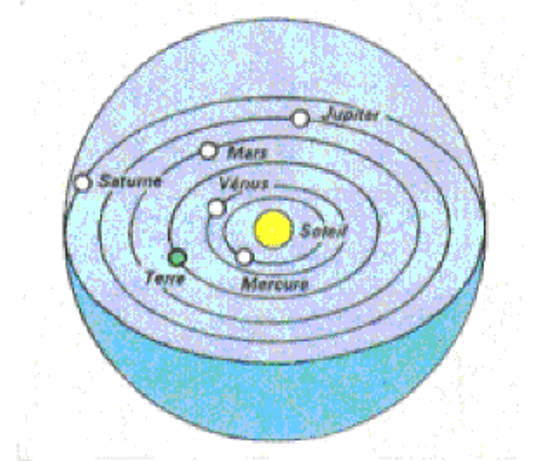
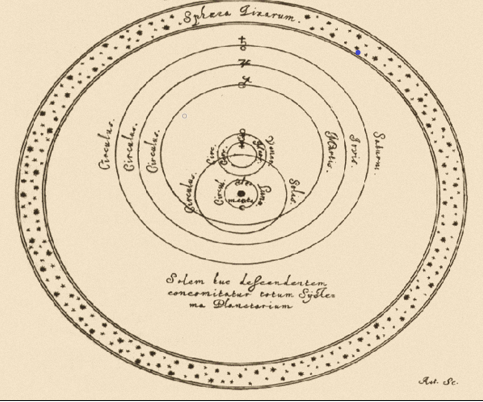
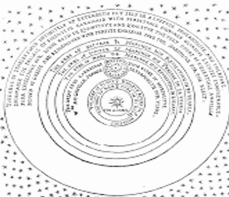
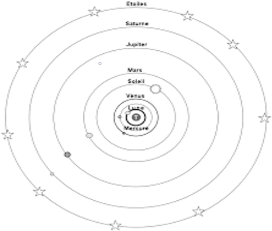
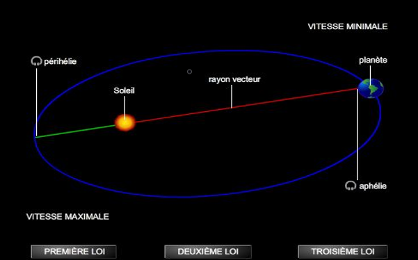
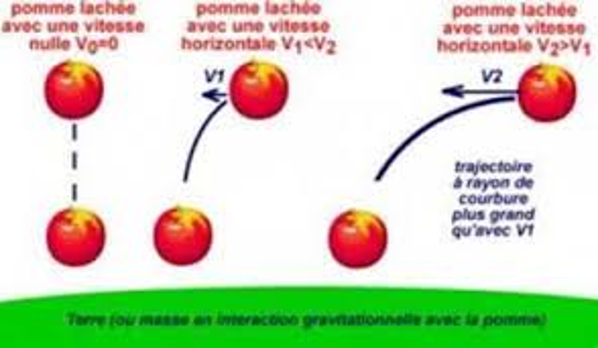

Au cours de l’histoire de l’humanité, L’Histoire de la compréhension du système solaire est marquée par des observations menant à plusieurs représentations de celui-ci qui se sont succédé :
| Modèle | Schéma |
|---|---|
| Le système solaire selon Aristote (IVe siècle av. J-C) : La Terre est immobile au centre du monde, les astres décrivent des cercles autour de la terre. |  |
| Le système solaire selon Ptolémée (≈IIe siècle apr. J-C) : Il reprend la vision d’Aristote en introduisant la notion d’épicycle (les planètes se déplacent à une vitesse constante sur un cercle). |  |
| Le système solaire selon Nicolas Copernic (1473-1543) : Il met le soleil au centre du système autour duquel les planètes tournent en plus de tourner sur elle-même. |  |
| Le système solaire selon Tycho Brahe (1546-1601) : il adopte un compromis entre les représentations précédentes. La Terre est au centre du monde, le Soleil tourne autour de la Terre et les autres planètes tournent autour du Soleil. |  |
| Le système solaire selon Giordano Bruno (1548-1600) : il défend la théorie Copernicienne et va plus loin en proposant l’idée d’un univers infini où chaque étoile est un soleil autour duquel peuvent tourner des planètes. |  |
| Le système solaire selon Galilée (1546-1642) : Il fait de nouvelles observations grâce à la lunette astronomique comme les phases de vénus ou les satellites de Jupiter. Il défend donc la théorie de Copernic. |  |
| Le système solaire selon Johannes Kepler (1571-1630) : En héritant des travaux de Tycho Brahe, il établit ce que l’on appelle les lois de Kepler. Les trajectoires des planètes sont en réalité des ellipses. |  |
| Le système solaire selon Isaac Newton (1642-1727) : il a démontré que le mouvement des objets dur Terre sont régis par les même lois naturelles. En se basant sur les lois de Kepler, il développa la loi universelle de la gravitation. |  |
A travers ces différentes représentation, nous pouvons identifier 2 modèles :
une théorie selon laquelle, la Terre est au centre du système et l’autre selon laquelle le soleil est au centre du système.
Elles sont respectivement appelées le Géocentrisme du grec « géo » qui signifie « Terre » et l’Héliocentrisme du grec « hélios » qui signifie « Soleil ».
Nous pouvons donc classer ces différentes représentations dans ces 2 théories.
| Modèle | Caractéristiques | Auteurs |
|---|---|---|
| Géocentrique | Théorie selon laquelle la Terre est au centre de l’Univers | Aristote (IVe siècle av. J-C) Ptolémée (≈IIe siècle apr. J-C) Tycho Brahe (1546-1601) |
| Héliocentrique | Théorie selon laquelle le Soleil est au centre de l’Univers | Copernic (1473-1543) Galilée (1546-1642) Johannes Kepler (1571-1630) Isaac Newton (1642-1727) |
Cependant ces 2 théories s'opposant, elles ont mené à
des grandes controverses où ces 2 conceptions du
système solaire ont été débattues. En effet, le géocentrisme, apparue au 2e siècle avant
Jésus-Christ, était la première théorie, elle bénéficiait de la protection de l’Eglise car elle plaçait l’Homme,
la création de Dieu au centre. Cependant, vers 1513 un nouveau modèle apparaît il s'agit de l'héliocentrisme et il impliquait un changement radical de perspective sur la place de
l’Homme dans l’univers et donc une remise en question de la religion. Cette révolution Copernicienne a donc fortement déplu à l’Eglise qui la condamna. Ces défenseurs était alors perçu comme des hérétiques et certains
en on subit les conséquences comme Giordano Bruno qui a été brulé vif.